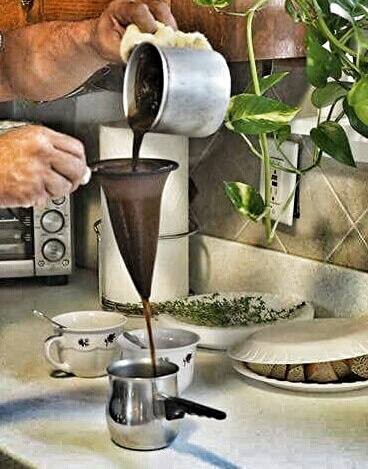

Guayoyo Negro

The most authentic way of drinking coffee Venezuela style.
Ingredientes
- Black grounded coffee
- Water
- Brown or cane sugar
- (optional)Milk
Steps
- For every black spoon of coffee, add one cup of boiling water. Add the coffee into the water and stir while boiling.
- Pour the hot coffee into the filter (or old T-shirt) directly above the cup. Be careful with pouring too much!
- When serving, add brown or cane sugar, and 2 spoons of milk (optional).